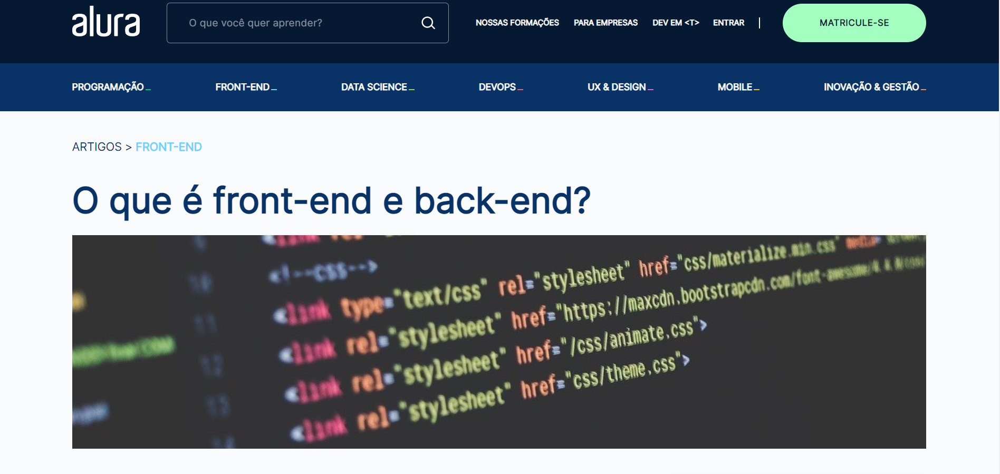
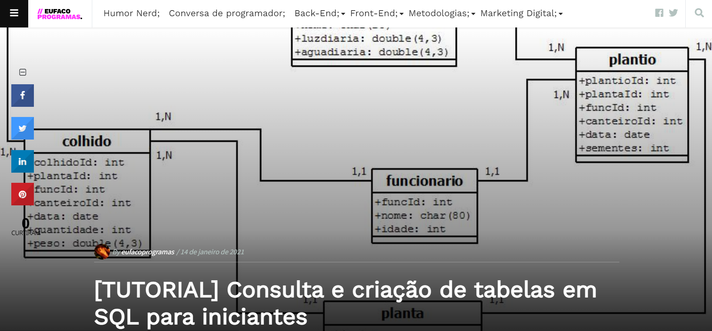
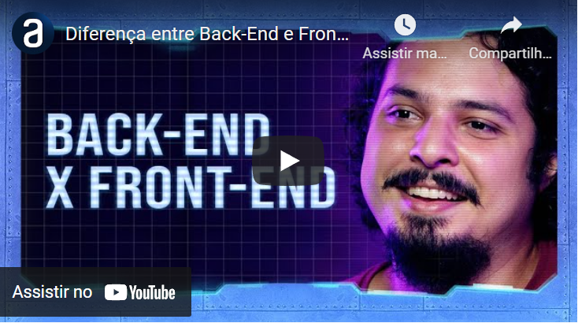

Sites
O que é front-end e back-end?
Podemos encontrar vídeos e podcasts explicando, não só back-end como front-end.
Exemplos de consulta e criação de tabelas em SQL.

Neste site você vai aprender como criar tabelas e realizar consultas em um banco de dados em SQL.
Podcast
Back-end for Front-end - Hipsters #202Podcast sobre back-end e front-end.
Video
Diferença entre Back-End e Front-End
Aqui conhecemos a diferença entre back-end e front-end.